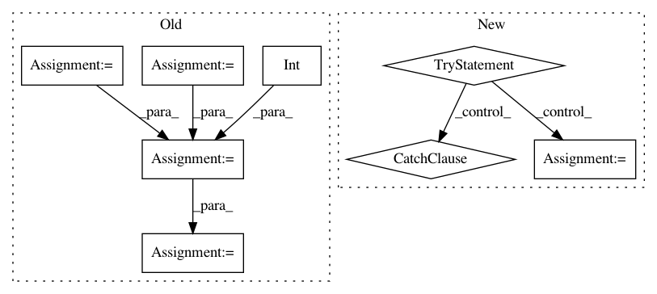

6b05ce9b975fdcdb982e4f3b14099df0f9e341af,scikits/cuda/misc.py,,maxabs,#Any#,495
Before Change
use_double = int(x_gpu.dtype in [np.float64, np.complex128])
use_complex = int(x_gpu.dtype in [np.complex64, np.complex128])
real_type = np.float64 if use_double else np.float32
// Set this to False when debugging to make sure the compiled kernel is
// not cached:
cache_dir = None
maxabs_mod = \
SourceModule(maxabs_mod_template.substitute(use_double=use_double,
use_complex=use_complex),
cache_dir=cache_dir)
maxabs = maxabs_mod.get_function("maxabs")
m_gpu = gpuarray.empty(1, real_type)
maxabs(x_gpu, m_gpu, np.uint32(x_gpu.size),
block=(1, 1, 1), grid=(1, 1))
After Change
try:
func = maxabs.cache[x_gpu.dtype]
except KeyError:
ctype = tools.dtype_to_ctype(x_gpu.dtype)
use_double = int(x_gpu.dtype in [np.float64, np.complex128])
ret_type = np.float64 if use_double else np.float32
func = reduction.ReductionKernel(ret_type, neutral="0",
reduce_expr="max(a,b)",
map_expr="abs(x[i])",
arguments="{ctype} *x".format(ctype=ctype))
maxabs.cache[x_gpu.dtype] = func
return func(x_gpu)
maxabs.cache = {}
cumsum_template = Template(
In pattern: SUPERPATTERN
Frequency: 3
Non-data size: 8
Instances
Project Name: lebedov/scikit-cuda
Commit Name: 6b05ce9b975fdcdb982e4f3b14099df0f9e341af
Time: 2013-07-28
Author: lev@columbia.edu
File Name: scikits/cuda/misc.py
Class Name:
Method Name: maxabs
Project Name: acoular/acoular
Commit Name: 97a543976472f88b7922cc8f8ef3d7c0b6cd3dee
Time: 2012-02-06
Author: sarradj@tu-cottbus.de
File Name: beamfpy/sources.py
Class Name: PointSource
Method Name: result
Project Name: lebedov/scikit-cuda
Commit Name: 4b0915db2571d721e4c9118ff4a324bd2e0867f2
Time: 2013-07-28
Author: lev@columbia.edu
File Name: scikits/cuda/misc.py
Class Name:
Method Name: cumsum